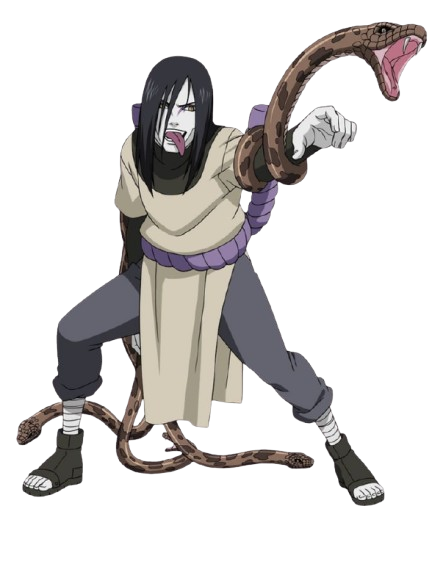

Orochimaru (大蛇丸)
Descrição: Orochimaru é um dos lendários Sannin de Konoha, conhecido por sua obsessão por poder e imortalidade. Ele é um mestre das artes ninjas proibidas e tem uma personalidade manipuladora e cruel.
Classe: Ninja, Ninja Cientista
Vila: Vila da Folha (Konoha)
Poderes: Técnicas ninjas proibidas, regeneração, invocação de serpentes, controle de corpos, manipulação de células, técnicas de imortalidade.